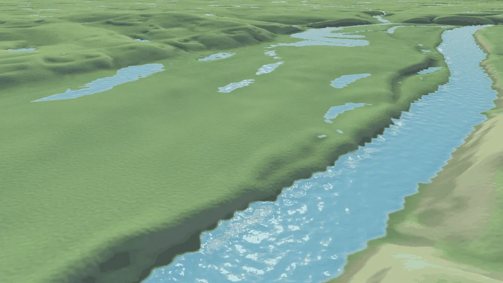
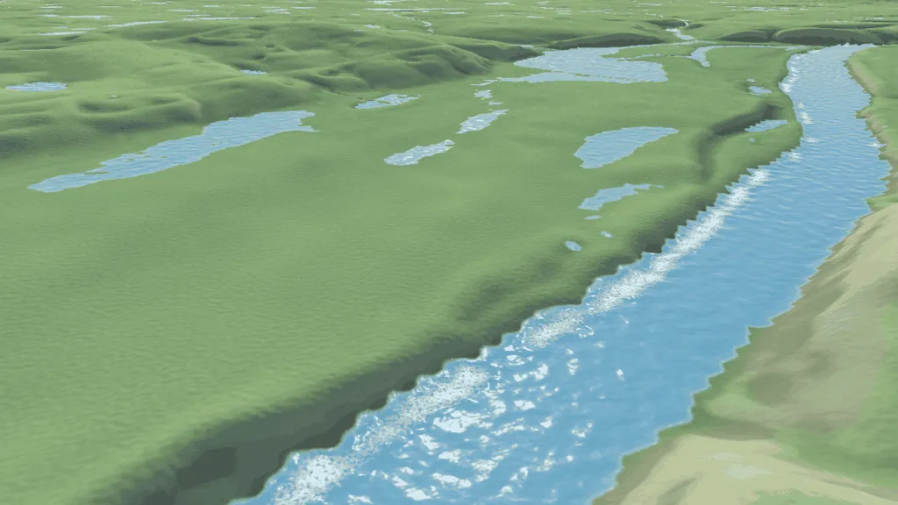
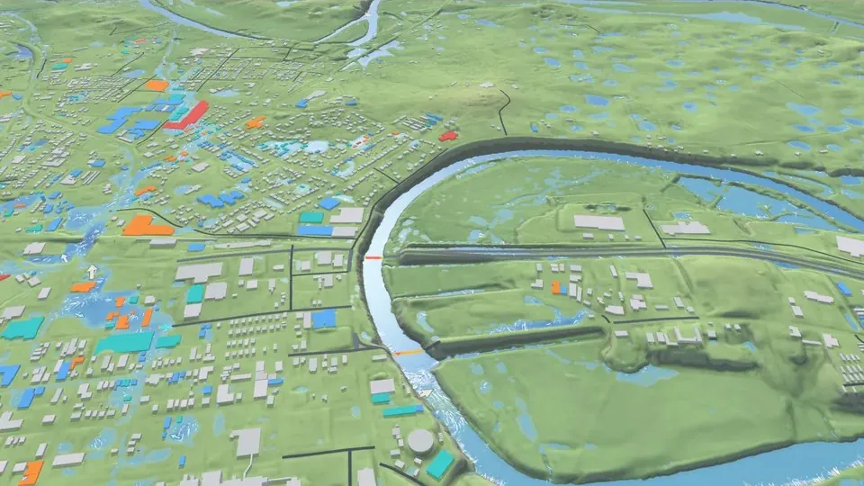

The project is an interactive 3-D flood-risk visualization for Bowling Green and all of Warren County. It combines real LiDAR terrain, FEMA flood zones, NOAA Atlas 14 rainfall statistics, historical rain-gauge records and a custom GPU hydrodynamic solver, delivered as a MapLibre web viewer and a native Vulkan (wgpu) desktop viewer. Work done at WKU's Disaster Science Operations Center and AI Research Lab, under Dr. Manmeet Singh (PI), with contributor Somnath Luitel.
Source: github.com/RobertLesoski/bg-flood-map


Same camera, 12 hours apart. Barren River floodplain in the 25-year design storm: drag the handle to watch ponds merge and the channel widen. Simulated output from the desktop viewer; not validated. Terrain: USGS 3DEP, KyFromAbove.
Architecture
Pipeline
Context layers (FEMA, OSM, sinkholes) feed the viewers directly rather than the solver. Depth rasters are re-gridded into COGs and flow grids on Vista so only tens of MB per storm have to be downloaded.
Inputs
Data sources
| Dataset | Source | Used as |
|---|---|---|
| 1 m LiDAR DEM (city) | USGS / KyFromAbove Phase 2 | Resampled to 2 m; covers ~13 % of the county grid |
| County terrain (~10 m) | USGS 3DEP 1/3 arc-second | Bilinear to 5 m, city DEM mosaicked on top |
| Historical hourly rain | Bowling Green gauge record | Six historical replays |
| Rainfall depths | NOAA Atlas 14, Warren County | Six design storms (2–100 yr) |
| Flood zones | FEMA NFHL | Context overlay (AE/A vs X) |
| Buildings & roads | OpenStreetMap / Geofabrik | 3-D extrusion, exposure, routing, impervious mask |
| Sinkholes | Derived from DEM | 3,872 closed depressions with depth / rim / volume |
| HPC | TACC Vista (NVIDIA H100) | Solver runs, COG generation, flow-grid conversion |
Numerics
Solver & physics
A 2-D shallow-water solver using the local inertial approximation (Bates et al., 2010), the same scheme as LISFLOOD-FP: the convective-acceleration term is dropped, which makes it cheap and GPU-friendly while keeping inertia, so it is more faithful than a pure diffusive-wave model.
- Roughness: Manning n = 0.035 outside the city; a detailed city n raster (roads, buildings) on top.
- Boundary: free outflow at the domain edge (slope 0.005); no inflow.
- Safety guards: aborts if the rain file implies > 600 mm/h (catches the classic mm/h vs m/s unit mistake) or if the grid is not UTM 16N at 5 m or exceeds 150 M cells; the county launcher also refuses to submit if the city DEM and 3DEP disagree by > 3 m (datum / units).
- Mass balance: logged each run; the 2-year county run closes to 2.2 × 10⁻⁹ %. This checks the numerical scheme against the SCS runoff volume, not the physics.
Forcing
Rainfall design
Six design storms use 24-hour depths within 3 % of NOAA Atlas 14 (retrieved 2026-10-28 for downtown Bowling Green, partial-duration series). Six more replay hourly blocks from the Bowling Green gauge.
Depth used vs. NOAA Atlas 14
Hyetograph (shared 11-point curve)
The temporal curve is the one fitted to the first 2-year run and reused for all design storms. It is not the NRCS Type II distribution; at hour 10 the domain-mean depth is 30.3 mm in the run, 30.4 mm from this curve, vs. 16.1 mm from Type II.
Losses
Infiltration: SCS curve number
Runoff of the cumulative rain is injected as a per-cell source. CN = 75 for open land and 98 for roads and buildings. Water already on the surface never infiltrates later. Try it:
Check: P = 3.5 in, CN = 75 gives ~33 mm of runoff, matching the 33.2 mm reported by the 2-year county run (of 88.9 mm rain).
HPC
Compute & grids
The county run is 10,404 × 12,043 cells at 5 m. One storm fits on one H100; all 12 are launched as a Slurm array with a throttle. The 2-year storm took 7 h 03 min wall time (423 min).
Grid & stability calculator
Δt here is the theoretical local-inertial limit at the chosen depth, not the step the production run used. The city's "80 M cells" counts valid cells inside the 20×20 km box.
Run controls
# dry-run: checks everything, builds nothing, writes the job file
bash run_county_all.sh --dry-run
# submit all 12 (or a subset); at most 4 at once
bash run_county_all.sh --only "25yr ev4" --throttle 4
# cancel the array
scancel -n warrenv2The launcher stops with a FATAL line and submits nothing if a rain file is missing or in the wrong units, the solver is an old version, DEM sources disagree, or the grid is wrong.
Delivery
Outputs & tiles
- EPSG:3857,
uint16depth in centimetres, nodata 65535 - 512 px tiles, DEFLATE + predictor 2, overviews 2/4/8/16/32
- 26 files per storm (25 hourly + max); HTTP Range supported so geotiff.js reads them directly
- ~5 m on the ground (6.25 mercator m)
- 2,631 × 3,052 cells of 25 m (about 20 m on the ground), hours 4–24
- Depth block-averaged 4× from 5 m to 20 m
- Velocity derived from water-surface slope with Manning, not solver output; the metadata says so
- Built on Vista in row strips (~0.5 GB RAM per worker), validated before being moved into place
Is the code right?
Verification
Verification asks whether the pipeline computes what it claims. It is separate from validation, which asks whether the model matches reality.
county_cog_tol setdepthAt path equal rasterioIs the model right?
Validation: first attempt
Event ev4 replays the April 2025 Bowling Green flood and is compared with roads that officials named as flooded or closed (21 roads) vs. 100 random control roads.

Why this is weak evidence, in my own write-up
- Half the rain: the replay uses 24 h of rain (4.97 in at the airport gauge); the real event ran April 2–6 with 10.5 in at the same gauge (13.1 in at WKU).
- No upstream inflow: much of the observed flooding was river or creek water, which the model cannot represent.
- Names, not depths: observations are road-closure reports matched by name; a whole named road is scored even if only part flooded, and roads not in the news are unknown, not dry. No true false-alarm rate can be computed.
- Road length confounds: road length alone separates the two groups about as well.
Conclusion as written: weak evidence the model finds where water collects, and no evidence about depth accuracy.
Interfaces
Viewers
- Real solver-depth tiles with click-to-query
- 3-D extruded buildings and roads coloured by depth tier (10 / 30 / 60 / 120 cm)
- Address search with per-storm risk card, source labels and uncertainty
- FEMA zones, sinkholes, critical facilities and utilities
- ~125 fps (city) and ~140 fps (county) at 1080p on a GTX 1650
- Measure, elevation profile, depth-over-time, storm compare and difference, flood duration
- Dry-route finder; building exposure filter with CSV / GeoJSON export
- Time-lapse, guided tour, PNG / MP4 export; works offline


Rendering is part of honesty, too. Specular glare on the water used to look like dry white patches; the fix keeps depth readable at glancing angles. Same camera, 25-year storm, simulated output.
Media
Gallery
Renders and screenshots from the desktop viewer. Click any image to enlarge; use the arrow keys to move between them. All water, depths and building tiers are simulated, unvalidated model output.
Terrain: USGS 3DEP and KyFromAbove. Contains data © OpenStreetMap contributors (ODbL) where roads and buildings appear. Images generated by my viewers; model output is unvalidated.
Roadmap
Subsurface karst & infrastructure integration research plan
Warren County drains through limestone: sinkholes, conduits and losing streams. The solver today treats the ground as a surface with a runoff loss. This is the architecture for bringing the missing layers into one pipeline, and an honest account of how much of it exists.
- DEMKyFromAbove LiDAR, UTM 16N, NAVD88
- Buildings68,389 merged footprints
- Bridges106 FHWA NBI structures
- KarstKGS sinkhole and subsurface-drainage layers
- BenchmarkUSGS gauge 03314500 (Barren River) stage
- DeliveryPMTiles + COG into the WebGL viewer
| Layer | Source | CRS / datum | Status |
|---|---|---|---|
| Terrain | KyFromAbove LiDAR DEM (county) and USGS 3DEP | EPSG:26916 · NAVD88 | built |
| Building footprints | merged county set, 68,389 polygons | EPSG:26916 | in the pipeline |
| Bridges | FHWA National Bridge Inventory, 106 in the domain | EPSG:26916 | plan |
| Sinkholes (derived) | closed depressions from the LiDAR DEM, screened against KGS data | UTM 16N | built 5,191 city · 24,948 county |
| Subsurface drainage | KGS karst and conduit layers | EPSG:26916 | plan |
| Calibration benchmark | USGS 03314500 Barren River at Bowling Green | NAVD88 stage | plan |
- Why it matters: a sinkhole can drain a street or flood a basement from below. A surface-only model gets both wrong in karst terrain.
- First deliverable: a single tiled layer stack with the same CRS and datum, with each layer's source and limits shown in the viewer's honesty line.
- First test: does adding sinkhole storage change simulated depths enough to matter against the April 2025 road closures? If not, say so.
Read before using
What the model does not include
| Limit | Why it matters | Status |
|---|---|---|
| Upstream river inflow (Barren River from Allen & Simpson counties) | Riverine flooding is absent; edges only let water out | open |
| Storm drains and karst drainage | Overstates ponding in places that drain underground, understates conveyance elsewhere | open |
| Uniform rain from one gauge / design curve | Real storms are spatially variable | plan: radar / NWP forcing |
| Uncalibrated CN = 75 and roughness | Depths are not constrained by observations | plan |
| ~10 m terrain outside the city | Small channels and building-scale flow unresolved | data-limited |
| Rain-on-grid sheet flow (2–3 cm everywhere) | Only ≥ 10 cm is treated as flooding in tiers and building counts | handled |
| Peaks between hourly saves | Max depth is the max of saved snapshots | known |
| Velocity from water-surface slope | Indicative, not solver output | labeled |
Reproduce
Run it locally
git clone https://github.com/RobertLesoski/bg-flood-map.git
cd bg-flood-map
pip install rasterio geopandas shapely numpy requests
python fetch_fema.py # FEMA NFHL zones
python osm_roads.py # roads + buildings (needs Geofabrik Kentucky .pbf)
python step3_data_integration.py
python -m http.server 8000 # open http://localhost:8000/viewer.htmlHPC outputs are excluded from the repo because of size (about 7 GB of viewer data); the docs describe how to rebuild them on a Slurm system.